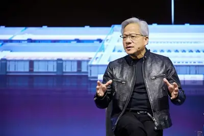
其他AI 每日新聞彙整
全部主題
其他
3 家媒體報導nvidia
黃仁勳承認婚外情！輝達董事會立案獨立調查中國間諜滲透事件
根據 CNBC 引述《紐約時報》與《金融時報》等消息報導，半導體大廠輝達（Nvidia）創辦人兼執行長黃仁勳（ […]
- iThome 黃仁勳承認婚外情，Nvidia董事會調查涉諜疑雲
- DIGITIMES 黃仁勳突發公開信坦承婚外情 NVIDIA捲中國間諜疑雲、董事會啟動獨立調查
- 科技新報 TechNews 黃仁勳承認婚外情！輝達董事會立案獨立調查中國間諜滲透事件
3 家媒體報導huangjensennvidia
Nvidia is investigating Jensen Huang’s relationship with a Chinese spy
Nvidia has announced that it is opening an investigation into CEO Jensen Huang and his relationship with Megaspeed executive Alice Huang, who was reportedly recruited by China's Ministry of State Security to spy on the company. A statement posted by the board of directors reads:
- The Verge AI Here’s the full text of Jensen Huang’s memo to Nvidia
- Hacker News (100+) Nvidia CEO Jensen Huang's letter to staff about affair
- TechCrunch AI Nvidia will investigate CEO Jensen Huang’s relationship with possible Chinese spy
- Hacker News (100+) Nvidia Board of Directors Is Investigating Jensen Huang
- The Verge AI Nvidia is investigating Jensen Huang’s relationship with a Chinese spy
2 家媒體報導sirimetaapple
古尔曼：苹果最早明年推出自主代理式 Siri，主动代用户完成任务
IT之家 11 月 9 日消息，彭博社记者马克 · 古尔曼在昨晚更新的《Power On》时事通讯中爆料，苹果计划最早于明年推出自主、代理式的 Siri，以对抗 ChatGPT Dots、Meta Muse、Grok。其目标是从响应命令转向一个能够主动管理任务并代表用户完成事务的助手。 古尔曼称：“Dots、Muse 和 Grok 可以跟踪目标，确定下一步需要做什么，并持续追求目标， 而无需用户主动启动每一步 。据我所知，苹果最终希望朝这个方向发展，我相信公司最快明年就能让 Siri 更像一个代理。” 据IT之家此前报道，苹果新任 CEO 约翰 · 特努
safety
AI 駭客攻擊日韓企業：自動化網路入侵加劇企業資安與營運風險
人工智慧的演進在推動企業效率提升的同時，也徹底翻轉了網路犯罪的攻擊形態。過去企業面對的資安威脅，多半來自特定團 […]

- 科技新報 TechNews AI 駭客攻擊日韓企業：自動化網路入侵加劇企業資安與營運風險
chipdatacenter
美國會變天衝擊AI？ 英業界：半導體全球合作本質不變
美國期中選舉結束，民主黨大勝，各界憂心美國人工智慧（AI）、興建資料中心腳步是否趨緩。英國科技業者表示，科技發展超越政黨和政治，美國大選不會改變半導體產業的跨...
- DIGITIMES 美國會變天衝擊AI？ 英業界：半導體全球合作本質不變
veraq26rubin
4Q26伺服器出貨續強 Vera Rubin供應受限、Arm架構CPU成主角
全球市場對AI疑慮加深，然DIGITIMES Research指出，2026年第4季全球伺服器出貨量預估將達489萬台，季增5.5%，為2026年季增幅度最高一季。其中，NVIDIA的Vera Ru...
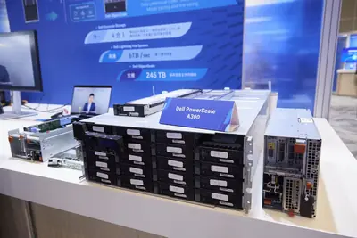
- DIGITIMES 4Q26伺服器出貨續強 Vera Rubin供應受限、Arm架構CPU成主角
regulationdatacenter
美國期中選舉恐改寫AI競爭格局 中國出口迎轉機
美國期中選舉後，民主黨成功取得國會兩院多數席次，預計2027年1月正式掌握國會主導權，未來可能透過加強資料中心審查、推動人工智慧（AI）安全監管，影響美國AI基礎建...
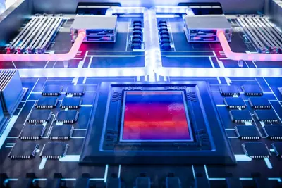
- DIGITIMES 美國期中選舉恐改寫AI競爭格局 中國出口迎轉機
robot
美國政局變化難擋AI浪潮 汎瑋材料看好伺服器、機器人雙助攻
美國民主黨在期中選舉大勝後，限制人工智慧（AI）擴張的呼聲隨即升高，近年來受惠於AI伺服器與機器人應用需求升溫，帶動電子機能材料業者汎瑋材料持續壯大，對於美國政...
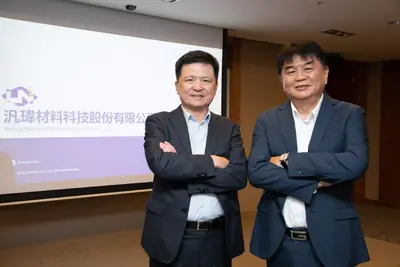
- DIGITIMES 美國政局變化難擋AI浪潮 汎瑋材料看好伺服器、機器人雙助攻
datacenter
踩煞車救AI泡沫？美期中選舉民意反撲 資料中心前途未卜
美國期中選舉結果顯示，選民對資料中心建設強烈抵制，雖然為美國經濟成長一重要動能帶來阻力，但放緩資料中心建設被視為有助降低人工智慧（AI）泡沫化的風險。即使如此...
- DIGITIMES 踩煞車救AI泡沫？美期中選舉民意反撲 資料中心前途未卜
2028chipdatacenter
南韓推太空資料中心三階段藍圖 目標2028年首次在軌驗證
南韓政府推動太空資料中心布局，規劃透過「K-Moonshot」計畫，分階段開發小型、中型及大型太空資料中心，建立太空AI服務商業化基礎。推動方向除結合本土AI晶片、記憶...
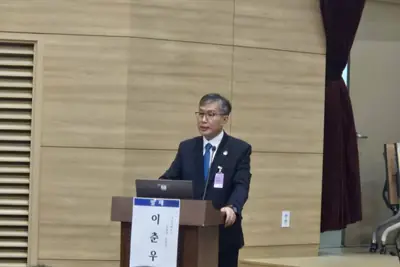
- DIGITIMES 南韓推太空資料中心三階段藍圖 目標2028年首次在軌驗證
amddatacenternvidia
【漫圖秒懂】超微資料中心營收狂飆97% 跟上NVIDIA成長腳步
- DIGITIMES 【漫圖秒懂】超微資料中心營收狂飆97% 跟上NVIDIA成長腳步
chip
京元電張高薰揭AI擴產新挑戰 示警供應鏈「需求」層層放大風險
京元電總經理張高薰表示，進入AI應用時代，隨著IC本身的售價大幅提高，如現在一顆高階IC可能相當於一輛汽車，半導體與晶片測試的價值也迎來翻轉契機，因為測試須更深入...
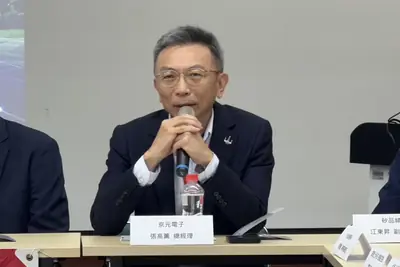
- DIGITIMES 京元電張高薰揭AI擴產新挑戰 示警供應鏈「需求」層層放大風險
4.9fundingdatacenter
三菱重工4.9億美元擴建美國燃氣渦輪廠 瞄準AI電力需求
看準人工智慧（AI）資料中心擴建帶動美洲電力需求攀升，三菱重工（Mitsubishi Heavy Industries）將投資4.9億美元，擴建美國喬治亞州工廠Savannah Machinery Works...
- DIGITIMES 三菱重工4.9億美元擴建美國燃氣渦輪廠 瞄準AI電力需求
chatgptmicrosoftopensource
IT早报 1109：208 万元比亚迪仰望鼎曜限量版车型价格揭晓；曝 ChatGPT 突现封号风波；特斯拉上海工厂零部件本土化率达 98%；央视曝光二手交易“到手刀”乱象...
“IT早报”时间，大家好，现在是 2026 年 11 月 9 日星期一，今天的重要科技资讯有： 1. 208 万元！比亚迪仰望鼎曜「山河鼎韵」限量版车型价格揭晓 仰望鼎曜“山河鼎韵”限量版拥有专属外观内饰及高定配置，包含琥珀金双腰线、限量版专属印记、专属云纹图案、出风口宝石 · 和田玉、金色扬声器面罩、车门内置芳纶纤维等。>> 查看详情 2. 曝 ChatGPT 突现封号风波，200 美元 Pro 用户也遭殃 据凤凰网科技消息，近期多名 ChatGPT 用户反映账号无预警被封，含 200 美元 / 月的 Pro 订阅用户，部分用户长期积累的聊天记录与工作
AI 最大的阻力不是水電，是人？
過去兩年，科技巨頭為了搶占 AI 市場，幾乎陷入一場不計成本的軍備競賽。NVIDIA 的 GPU 供不應求，微 […]
- 科技新報 TechNews AI 最大的阻力不是水電，是人？
500
標普 500 企業僅 15% 設「AI 長」，企業高層問責機制為何面臨難產？
人工智慧（AI）已不再僅限於單純的技術部署，而是全面滲透至企業的營運核心，涵蓋公司治理、風險控管與資訊安全等重 […]
- 科技新報 TechNews 標普 500 企業僅 15% 設「AI 長」，企業高層問責機制為何面臨難產？
tencentapi
腾讯元器停止服务，明年 1 月起不再受理数据导出申请
IT之家 11 月 9 日消息，腾讯元器平台今日正式停止服务，应用访问、数据读写、API 调用、控制台使用等所有面向公众的服务，不支持用户访问。通过元器平台发布到其他渠道（包括公众号、服务号、微信客服等）的智能体不支持响应用户对话。 从上个月 29 日起，腾讯元器已停止创建新的智能体、API Key 分发功能。用户目前可以通过数据导出控制台，提出导出任务申请。 2027 年 01 月 09 日后不再受理数据导出申请 ，除法律法规规定须留存的日志等记录外，官方将删除全部用户数据，请您在此前完成备份。 如您曾通过旧版元器入口在腾讯云官网购买资源包，且截至正式
parsesqlitenumber
parse_number() as a SQLite extension: C vs Rust
Research: parse_number() as a SQLite extension: C vs Rust I was out walking the dog when I got curious about how easy/difficult it would be to write a SQLite C extension that adds a parse_number() function for turning strings like -$1,234.56 or '12.5%' into numeric values that co
- Simon Willison parse_number() as a SQLite extension: C vs Rust
naverabbsafety
【科技早餐】孫正義 54 億美元機器人併購受阻！NVIDIA 完成 10 億美元入股 NAVER
【科技早餐】今天精選 8 則國內外重要科技新聞。 ＊孫正義 54 億美元機器人併購卡關，中國禁止收購 ABB 在中業務 日本軟銀集團（SoftBank Group）11 月 6 日公告，已在 11 月 4 日接獲中國外商投資安全審查機關通知，禁止收購瑞士 ABB 在中國的機器人業務。ABB 也在 11 月 5 日證實這項決定。軟銀由董事長兼執行長孫正義（Masayoshi Son）領導，去年 10 月與 ABB 簽署協議，擬以企業價值 53.75 億美元收購其全球機器人部門。這次禁令直接影響中國業務部分，雙方目前仍在討論如何推進整體交易，尚未宣布全球併購
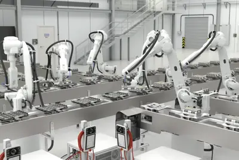
- TechOrange 科技報橘 【科技早餐】孫正義 54 億美元機器人併購受阻！NVIDIA 完成 10 億美元入股 NAVER
claudeanthropicurl
Goldman Sachs is pulling Claude Code from its bankers and traders
Article URL: https://www.thestateofai.com/news/goldman-sachs-claude-code-traders-bankers Comments URL: https://news.ycombinator.com/item?id=50415628 Points: 550 # Comments: 328
- Hacker News (100+) Goldman Sachs is pulling Claude Code from its bankers and traders
- Hacker News (100+) Goodbye Claude, hello Pi
sunoelviseminem
Elvis and Eminem rights holders are suing Suno
Suno is facing yet another pair of lawsuits. A group of rights holders of Elvis Presley's music and the publisher of some of Eminem's biggest records are suing the AI music company, claiming it illegally generates music and lyrics that mimic those artists. The lawyers in the Pres
- The Verge AI Elvis and Eminem rights holders are suing Suno
amazon
亚马逊成立新团队专攻家用机器人，剑指“前所未有”的新产品
IT之家 11 月 8 日消息，美国 CNBC 分析亚马逊的招聘信息发现，过去几个月，亚马逊组建了一支新团队，准备开发 一款前所未有的机器人产品 。 亚马逊近期发布的一则工程师招聘信息写道：“机器人即将走出电影，进入我们的家中。”这条被撤掉的招聘信息透露，新产品能够 适应不断变化的家庭环境 ，并在人类家庭成员身边自主活动。 亚马逊一向愿意押注长期项目，即便短期内不被外界理解，只要能够 帮助公司抢占新市场的先机 ，就值得投入。此前的 Alexa 语音助手和 Kindle 电子书阅读器，都采用了这种发展策略。 亚马逊 CEO 安迪 · 贾西在最近的年度股东信
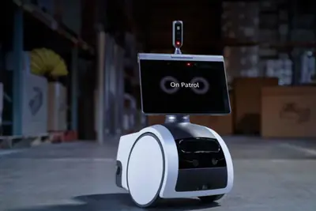
2.02000116
蚂蚁集团：旗下 AI 助手灵光用户数量已突破 2000 万，2.0 版本上线一周已帮助用户管理超 116 万项事务
IT之家 11 月 8 日消息，蚂蚁集团旗下 AI 助手灵光宣布：自今年 10 月 27 日灵光 2.0 上线以来，一周内已帮助用户管理超 116 万项事务，执行超 360 万次任务。灵光用户已突破 2000 万。 参考IT之家先前报道，蚂蚁集团于 10 月 27 日发布灵光 2.0，其最大特性是 AI 介入任务的起点进一步前移。 过去，用户需要先发现问题、提出需求，再由 AI 执行；如今，在获得用户授权后，灵光能够结合已接入的信息与服务，主动识别潜在需求，并发起分析、监测和跟进，并在需要用户关注的节点及时提醒。AI 不再只是等待指令的工具，而开始成为能
taycanpanamerapcm
保时捷多款车型车机性能升级：新一代通讯管理系统算力达前代 5 倍
IT之家 11 月 8 日消息，保时捷宣布，911、Taycan、Panamera 和卡宴都将迎来一次大幅“性能”升级。不过，此次提升的 不是发动机动力，而是车机算力 。 保时捷本周发布了新一代保时捷通讯管理系统（PCM），算力最高可达上一代的 5 倍。得益于全新硬件架构， 车机启动和应用加载速度更快 ，同时运行多个应用时也更加流畅。 除了提升响应速度，新系统还增加了多项功能。保时捷把最早搭载于纯电卡宴的数字交互系统 引入 911、Taycan、Panamera ，以及燃油版、混动版卡宴。新界面提供五种主题、可自定义的桌面组件，还能根据车主的实车生成 3
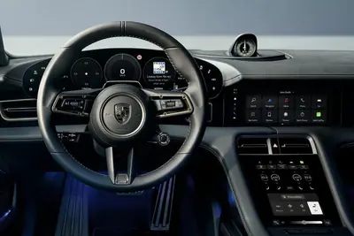
autodna
上海交大构建 AI 原生科学实验室 AutoDNA 装置：实现自主分子生物学实验操作，成果登《自然》
IT之家 11 月 8 日消息，上海交通大学计算机学院 IPADS 实验室陈海波、王肇国团队与化学化工学院、变革性分子前沿科学中心樊春海、王飞团队合作，依托张江高等研究院 DNA 存储研究中心开展研究， 成果发表于《自然》（Nature）杂志 ，并获该刊官网首页头条重点报道。 研究团队构建了 AI 原生科学实验室 AutoDNA 装置（思源一号），实现了自主分子生物学实验操作 ，通过对模型、实验与仪器进行协同设计，解决了现有 AI 自主科学实验室向分子生物学实验拓展时，在复杂流程组织、多类仪器协同以及实验时序、环境稳定性和操作精度保障等方面面临的难题，使
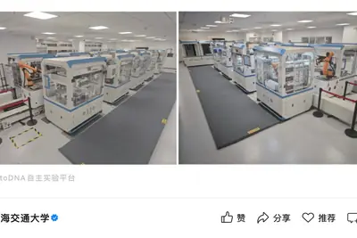
bytedance
消息称字节跳动拟扩大巴西数据中心项目
IT之家 11 月 8 日消息，据彭博社 7 日报道，字节跳动 考虑扩大在巴西东北部的数据中心项目 ，以进一步巩固其在拉丁美洲算力基础设施建设领域的领先地位。 知情人士透露，字节跳动正物色开发商，负责 巴西塞阿拉州佩森工业港数据中心项目 的二期建设。该项目可通过向境外输出数据享受税收优惠。 与此同时，智利、阿根廷等国纷纷推出优惠政策、完善基础设施，争取吸引数据中心投资，巴西也希望在这场竞争中保持优势。 知情人士称，佩森港数据中心二期的建设规模将超过塞阿拉州目前在建的 100 亿美元 （IT之家注：现汇率约合 669.08 亿元人民币） 、300MW 项目
- IT之家 消息称字节跳动拟扩大巴西数据中心项目
日本富士电视台将在所有真人剧集制作中使用 AI，可省七至八成特效制作工序
IT之家 11 月 8 日消息，据日经亚洲当地时间 6 日报道，富士电视台计划从 2027 年 10 月起，将生成式 AI 应用于 所有真人电视剧的制作 ，大幅缩短制作周期。由此，富士电视台将成为日本首家全面引入 AI 参与节目制作的大型商业电视台。 富士电视台 每年制作 16 部电视剧 ，计划使用谷歌 AI 图像生成和编辑工具 Nano Banana。AI 制作工作将交给富士电视台 9 月成立的内部实验室 AI Sandbox，主要由东京制作公司 ANDENT 培训的 CG 设计师负责，开展 AI 技术的测试和应用实验。 AI 技术也被用于富士电视台播
tencent
腾讯姚顺雨谈“AI 模型公司护城河”：更多存在于产品层，而不是模型层
IT之家 11 月 8 日消息，据第一财经报道，在 2026 未来科学大奖的一场对话中，清华大学讲席教授、中国工程院外籍院士张亚勤向腾讯首席 AI 科学家姚顺雨抛出了一个尖锐的商业问题， 模型公司的护城河究竟是什么 ？ 姚顺雨的回答是， AI 护城河更多存在于产品层，而不是模型层 。真正难以替代的，不一定是最聪明的模型，而是能够理解用户背景、利用专有数据和上下文，并获得用户信任的 AI 产品。 姚顺雨以微信为例，如果用户可以直接在微信中使用 AI，这个 AI 未必需要拥有最强大的模型能力，但它了解用户的日程安排、朋友关系和各种活动信息。这些信息能够帮助
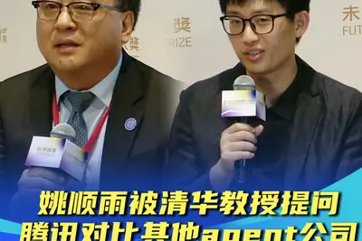
cookingusednyt
I Used NYT Cooking’s New AI-Powered Recipe Modifier, and It’s Actually Pretty Good
The New York Times has added a beta feature to its Cooking app that helps readers swap ingredients or adjust recipes to suit their needs. It mostly hits the mark.
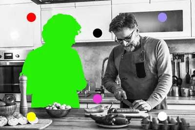
onepwranthropicxai
AI 公司迄今最大发电设备采购订单：曝 Anthropic 砸 34 亿美元买燃气发电机
IT之家 11 月 8 日消息，据英国《金融时报》今天（8 日）晚间报道，Anthropic 签下了一份大额数据中心燃气发电机组采购订单。 随着发电设备供应日趋紧张，AI 公司开始绕过中间商直接采购，进一步涉足能源行业。 报道披露，9 月下旬，Anthropic 斥资 34 亿美元 （IT之家注：现汇率约合 227.49 亿元人民币） ，从美国得克萨斯州圣安东尼奥的设备供应商 OnePWR Solutions 手中接下总功率达 1.7GW 的重型发电机组订单。 按照已知交易记录，这是 AI 公司 迄今规模最大的一笔发电设备采购订单 ，也反映出科技企业为争
air12012499
24G+1T 版 12499 元，华硕灵耀 16 Air 骁龙版笔记本上架
IT之家 11 月 8 日消息，华硕灵耀 16 Air 骁龙版 AI 超轻薄本现已在电商平台上架，24GB+1TB 版本定价为 12499 元。 京东 华硕灵耀 16 Air 骁龙 X2 Elite Extreme 版 12499 元 直达链接 该机型搭载全新骁龙 X2 Elite Extreme 处理器，采用 3nm 先进制程，配备 18 核 CPU，最高加速时钟频率达 4.7GHz，NPU AI 引擎算力为 80TOPS，CPU 性能释放可达 53W，配合双风扇双热管内吹风道设计，可高效应对工作、游戏与创作类负载。 机身方面，灵耀 16 Air 厚度
deepseekllama-modchipram
Llama-modchip: 284B DeepSeek on 64GB RAM, no GPU
Article URL: https://github.com/synchopate/llama-modchip Comments URL: https://news.ycombinator.com/item?id=50411961 Points: 343 # Comments: 143
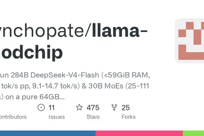
- Hacker News (100+) Llama-modchip: 284B DeepSeek on 64GB RAM, no GPU
macmini4799
再破五千大关：苹果 Mac mini M6 国补后京东 4799 元再降价
苹果 8 月 25 日发布全新 Mac mini 便携式主机 ，搭载全新 M6 芯片与此前已经推出的 M5 Pro 芯片，6999 元起售。 今日叠加国补后（M6 版国补限地区），京东自营仅需 4799 元起（教育优惠版 4777 元），较上市初期直降千元，再破五千大关： PLUS 会员 20:00 2 积分抢 800-80 元： 点此兑券 京东 苹果 Mac mini M6 还有教育优惠版可选 国补后 4799 元起 直达链接 京东 苹果 Mac mini M5 Pro 还有教育优惠版可选 国补后 10108 元起 直达链接 京东 11.11 红包至高
worldmodelssoon
World Models Will Soon Be Inescapable. Here’s What You Need to Know
Moving AI from text to 3D space, world models simulate real-world physics to teach robots and autonomous cars how to navigate reality.
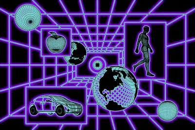
token
中国移动云公司与智谱签署合作协议，围绕国产算力、大模型服务和 AI 商业化合作
IT之家 11 月 8 日消息，11 月 6 日，中国移动云公司与北京智谱华章科技股份有限公司正式签署合作协议，在 Token 技术创新、模型服务、产品打造、行业方案等领域深化战略合作。 移动云总经理孙少陵，智谱华章 CEO 张鹏现场见证签约。 据介绍，双方将聚焦 国产化算力适配与模型调优 ，共建 Token 联合发展中心，攻坚关键核心技术，持续提升 Token 生产效率。 此外， 智谱 GLM 系列模型将接入 MoMA 模型服务平台 （IT之家注：移动云 MaaS 平台），双方还将联合构建智能产品矩阵，共创 AI Coding 融合产品；深耕金融、政务
amddatacenter
苏姿丰：AMD 是一家数据中心优先的公司
IT之家 11 月 8 日消息，当地时间 11 月 5 日，AMD 首席执行官苏姿丰（Lisa Su）在接受雅虎财经采访时，将该公司描述为一家“数据中心优先（data center first）”的企业。 IT之家注意到，该表态发生在 AMD 公布其 2026 财年第三财季（2026 年 6 月 28 日～2026 年 9 月 26 日）财务业绩之后， 财报显示其数据中心收入比去年几乎翻了一倍 。 在与雅虎财经主播 Brian Sozzi 交谈时，苏姿丰解释说， 人工智能的落地普及速度远超许多企业的预期 。过去习惯按照年度制定投资规划的公司，如今正在更频
- IT之家 苏姿丰：AMD 是一家数据中心优先的公司
samsung200
同比几乎翻倍：消息称三星电子现金资产超 200 万亿韩元，为韩国企业首家
IT之家 11 月 8 日消息，韩联社今日报道，据业界消息，截至第三季度末，包含现金及现金等价物、短期金融工具等在内， 三星电子的现金资产总额达 214.8 万亿韩元 （IT之家注：现汇率约合 1.06 万亿元人民币） 。 这一数字较上一季度的 190 万亿韩元激增 24.8 万亿韩元，使三星电子成为首家现金资产突破 200 万亿韩元的韩国企业；与去年同期的 108.5 万亿韩元相比，增幅接近一倍。 三星电子资产总额则由上一季度的 759.48 万亿韩元增长 32.36 万亿韩元，达到 791.84 万亿韩元 （现汇率约合 3.9 万亿元人民币） ， 距
brp
AI 演算法解碼兩萬基因發現天然胜肽 BRP，進食量降 50% 且純減脂不甩肌
史丹佛醫學院研究團隊日前利用人工智慧（AI），從大量候選生物分子中成功篩選出一種名為「BRP」的天然胜肽。最新 […]
- 科技新報 TechNews AI 演算法解碼兩萬基因發現天然胜肽 BRP，進食量降 50% 且純減脂不甩肌
hbmgpucompute
阿貢實驗室獲百倍 GPU 記憶體加持，結合全新 AI 算力開啟「自主實驗室」研究新紀元
美國能源部阿貢國家實驗室（Argonne National Laboratory）4 日宣布，將擴充其推論服務 […]
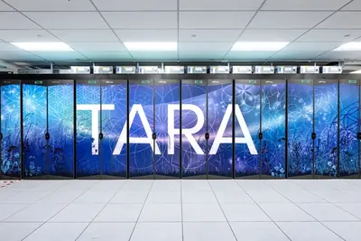
- 科技新報 TechNews 阿貢實驗室獲百倍 GPU 記憶體加持，結合全新 AI 算力開啟「自主實驗室」研究新紀元
「AI 開發 AI」時代來臨？解密遞迴式自我改進的無限潛力與作弊隱憂
人工智慧是否有一天能「自己打造自己」，正成為 AI 圈最受關注的議題之一。根據最新報導，越來越多頂尖 AI 研 […]
- 科技新報 TechNews 「AI 開發 AI」時代來臨？解密遞迴式自我改進的無限潛力與作弊隱憂